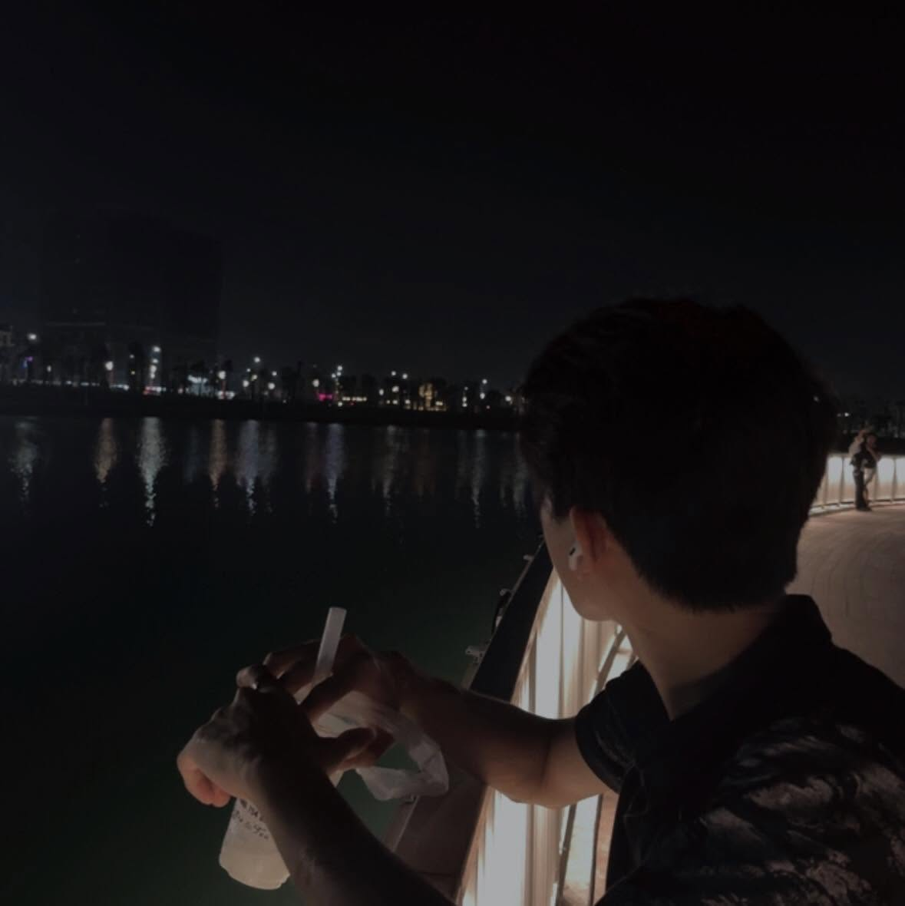

Họ tên: Phạm Tuấn Anh
MSSV: DTC235180017
Lớp: KTPM K22A
Email: DTC235180017@ictu.edu.vn
GitHub: github.com/pta204
Giới thiệu: Sinh viên năm cuối ngành Kỹ Thuật Phần Mềm, đam mê lập trình và DevOps. Mong muốn phát triển kỹ năng CI/CD và triển khai ứng dụng web.
Kỹ năng: Thành thạo các ngôn ngữ lập trình cơ bản và nâng cao
Công cụ: VSCode, Dev-C, Pycharm
Kinh nghiệm: Quản lý nhóm nhỏ, tham gia các dự án học thuật và cá nhân, triển khai CI/CD cho các dự án web.
Mục tiêu: Nâng cao kỹ năng DevOps, triển khai các dự án thực tế và đóng góp vào cộng đồng mã nguồn mở.
Trường: Đại học Công Nghệ Thông Tin & Truyền Thông Thái Nguyên
Ngành học: Kỹ Thuật Phần Mềm
Tình trạng: Đang học năm 4
Bằng cấp / chứng chỉ: Chưa có chứng chỉ chuyên môn, đang trong quá trình học tập và chuẩn bị cho các kỳ thi chứng chỉ quốc tế.
Tiếng Việt: Thành thạo
Tiếng Anh: Giao tiếp và nghe viết ổn
Ngôn ngữ khác: Tiếng Trung
Ngôn ngữ lập trình: [Java, Python, C++, JavaScript, HTML/CSS]
DevOps Lab 1 — Website cá nhân
Xây dựng website bằng HTML, CSS và JavaScript. Sử dụng GitHub Actions để tự động triển khai lên GitHub Pages.
Dự án khác:
Lesson: DevOps Lab 1 — Tổng quan
Deploy by: GitHub Actions CI/CD
Day deploy:
Pipeline status: Automated